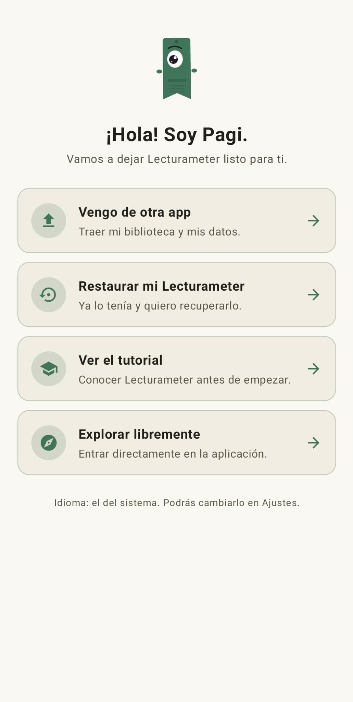
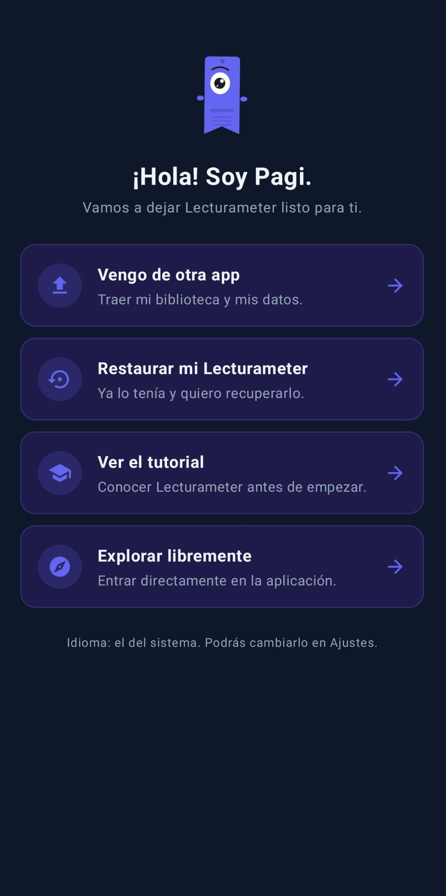
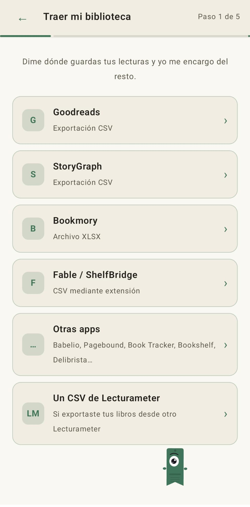
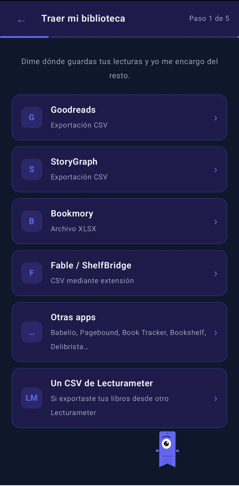

Blog · 2026-09-14
Cómo traer tu biblioteca de Goodreads (y StoryGraph, Bookmory, Fable…) a Lecturameter
Lecturameter lee exportaciones de Goodreads, StoryGraph, Bookmory, Fable/ShelfBridge y varias apps más. Este post repasa cómo funciona cada una.
Dónde vive tu biblioteca
Si ya llevas tus lecturas en otra parte y quieres moverlas, Lecturameter acepta exportaciones de la mayoría de las apps de tracking populares: Goodreads, StoryGraph, Bookmory, Fable (con la extensión ShelfBridge) y varias más pequeñas. En este post te cuento el paso de exportar en cada una, para que elijas la tuya y sigas los pasos.
Nada de esto requiere una cuenta de Lecturameter. El fichero se queda en tu móvil.
El asistente de importación
Al abrir Lecturameter por primera vez, Pagi te pregunta qué quieres hacer. Una de las opciones es "Vengo de otra app". La eliges y entras en el asistente de importación.


El asistente es una lista de orígenes. Tocas el que usas, le pasas el fichero y Lecturameter interpreta el esquema. El mismo asistente vive también en Ajustes, Importar, así que lo puedes ejecutar más tarde.


Goodreads (CSV)
Goodreads todavía te deja exportar tu biblioteca, pero la opción está escondida y solo funciona desde la web de escritorio. En móvil no aparece.
- Ve a goodreads.com y entra con tu cuenta.
- Pulsa "Mis libros" en la barra superior.
- En el menú lateral, en la sección "Herramientas", pulsa "Importar y exportar".
- Busca la sección "Exportar tus libros" y pulsa "Exportar biblioteca".
- Espera un minuto. Cuando el archivo está listo aparece un enlace del tipo "Tu exportación de Goodreads" que descarga un CSV.
El fichero es una fila por libro con unas treinta columnas. Lo que importa: título, autor, ISBN, tu valoración, fechas de lectura, fechas de añadido, estanterías (personalizadas y exclusivas) y tu reseña. Las notas privadas vienen en la columna "Private Notes", que es fácil pasar por alto.
La valoración usa estrellas enteras, no medias. Las fechas van en formato "AAAA/MM/DD". Amigos, comentarios, likes y grupos se quedan en Goodreads. Eso no es una limitación de Lecturameter, sencillamente no están en el fichero.
StoryGraph (CSV)
StoryGraph también exporta desde la web. Entra en app.thestorygraph.com, abre Settings, luego Manage Account y usa la opción Export. Obtienes un CSV con tus libros, estanterías, valoraciones, reseñas, fechas y tags. Lecturameter lo lee directamente y mapea los campos.
Bookmory (XLSX)
Dentro de Bookmory abre Ajustes, luego Backup y "Exportar a Excel". Obtienes un .xlsx con hojas separadas para libros, valoraciones y sesiones de lectura. Lecturameter lee el xlsx directamente; no hace falta convertirlo.
Fable / ShelfBridge (CSV mediante extensión)
Fable en sí no tiene botón de exportar. El proyecto de la comunidad ShelfBridge es una extensión de navegador que lee tus datos de Fable y genera un CSV compatible con Fable. Lecturameter acepta ese fichero en el hueco Fable / ShelfBridge del asistente.
Book Tracker (CSV)
Abre Book Tracker, entra en Ajustes > Exportar y elige CSV. Obtienes un fichero con tus libros, valoraciones, fechas y estanterías. Súbelo al hueco Book Tracker del asistente y Lecturameter lo lee.
Otras apps
El asistente también tiene un hueco "Otras apps" para Babelio, Pagebound, Bookshelf, Delibrista y similares. Si la app que usas puede generar un CSV o un XLSX, Lecturameter intenta detectar el esquema automáticamente.
Si la tuya no está reconocida, el plan B es sencillo: abre el fichero en una hoja de cálculo, deja las columnas de título, autor, valoración, fechas y estantería, guárdalo como CSV e impórtalo como Goodreads. El lector de Goodreads es el más permisivo del grupo.
Qué viene contigo, qué no
Para todos los orígenes, lo mismo cruza siempre: libros, estanterías, valoraciones, fechas y notas o reseñas personales.
Y lo mismo se queda fuera en todos los servicios: amigos, comentarios, likes, grupos y follows. Es una limitación de los propios ficheros de exportación, no de Lecturameter. No hay nada que traer porque nunca estuvo en el fichero.
Después de la importación
Si te saltaste el asistente al arrancar, la importación también está en Ajustes, Importar. Lee las estanterías del fichero y te pregunta cuáles quieres traer. Valoraciones, fechas y notas vienen con los libros. Nada sale del móvil. La biblioteca acaba en tu teléfono.
Pruébala en Android
Sigue leyendo: ¿A qué velocidad leo de verdad? · Tiempo de lectura o páginas · Alternativa a Goodreads